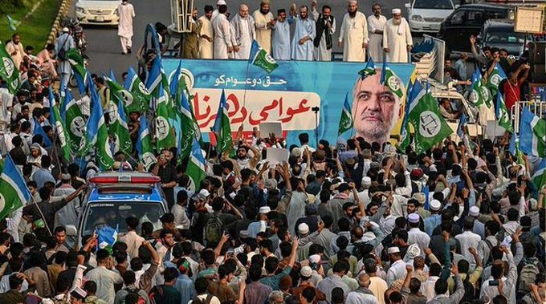
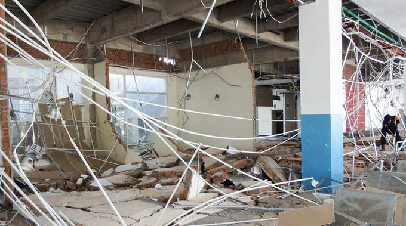
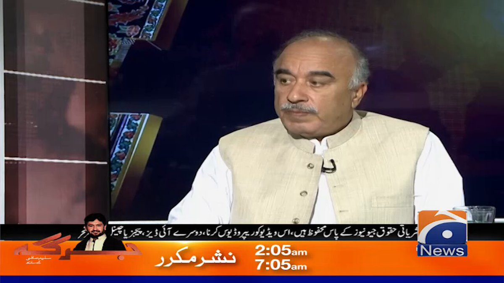

@geonews_urdu
📝 原文: Azad Kashmir Elections: In District Bagh's 2 seats, PML-N wins one, PPP wins the other
🇨🇳 译文: 自由克什米尔选举：在巴格区的 2 个席位中，PML-N 赢得一个席位，PPP 赢得另一个席位

🕒 2026-08-15T20:05:29+00:00
| 来源 | 旧窗口内数量 | 本次新增 | 本次淘汰 | 当前窗口内共有 |
|---|---|---|---|---|
| 推文 + Dawn 新闻 | 0 | 22 | 0 | 22 |
| ARY News | 0 | 0 | 0 | 0 |
注：淘汰数 = 旧窗口内数量 + 本次新增 - 当前窗口内共有




